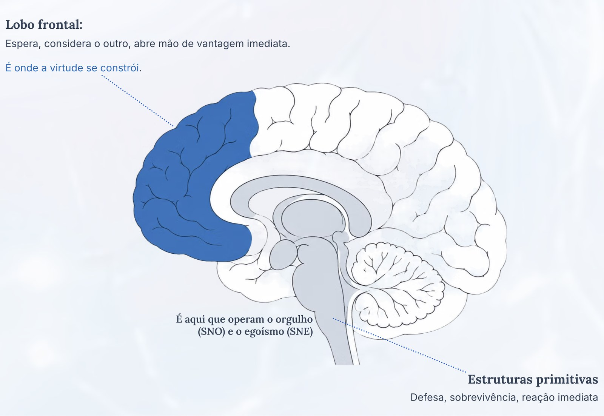
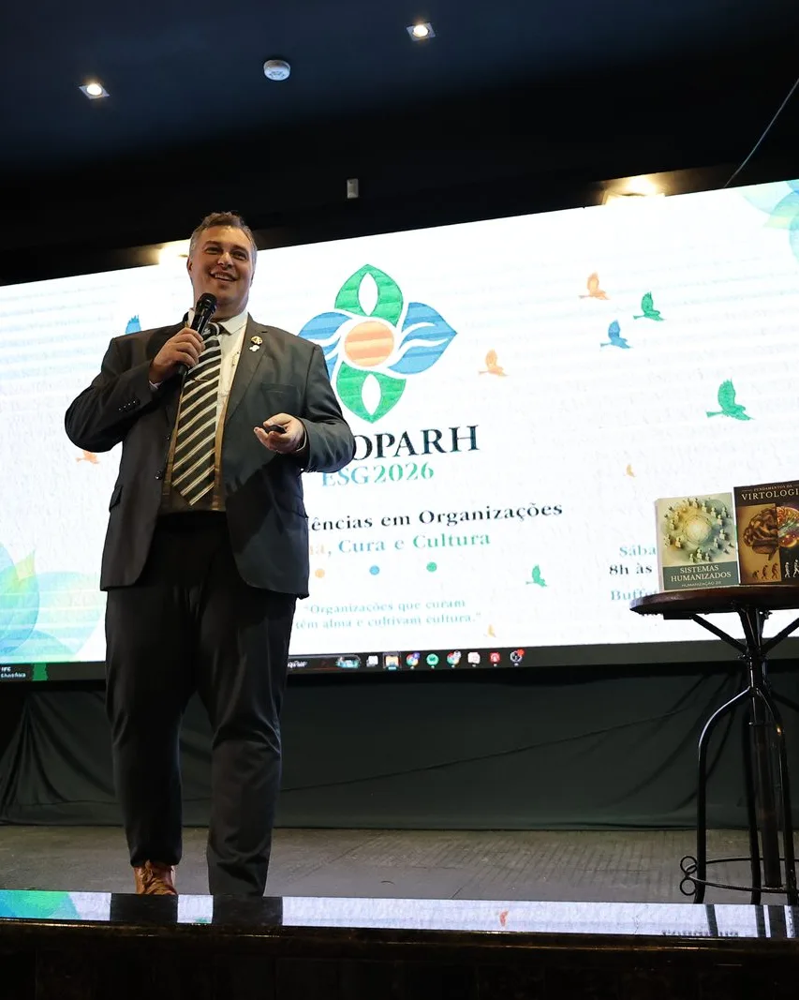
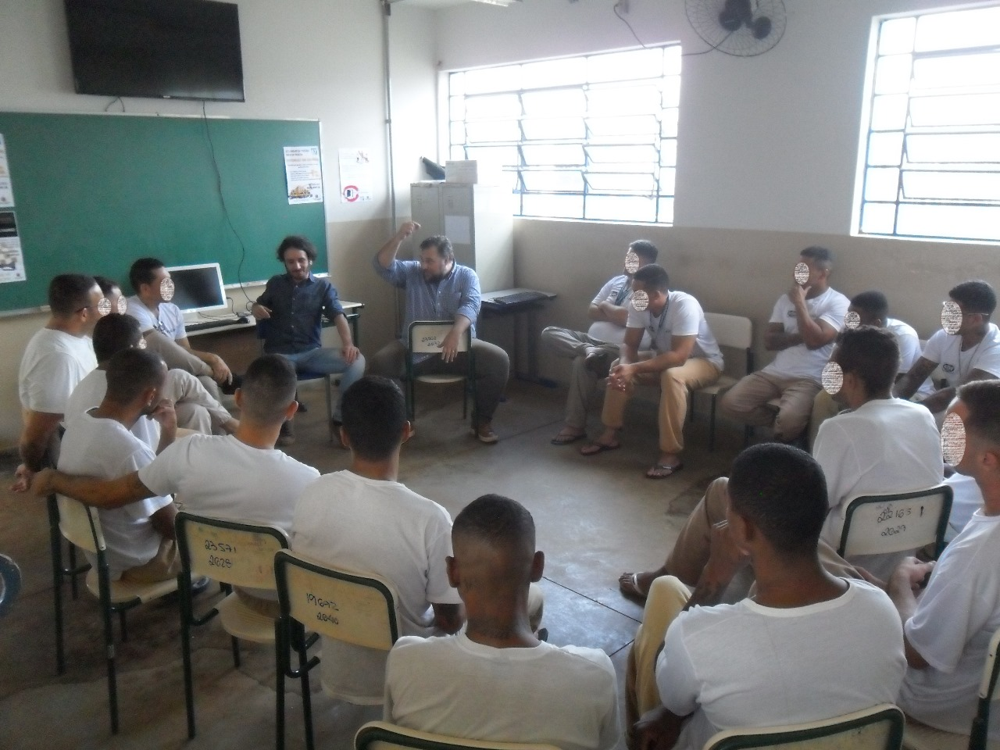
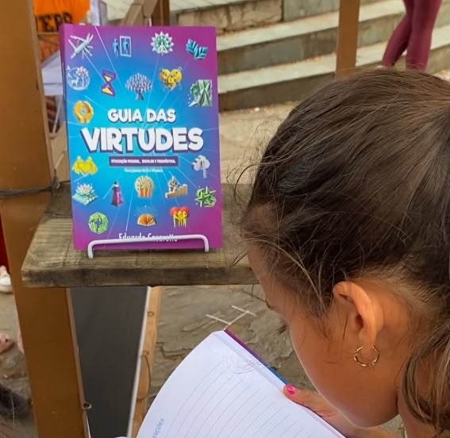
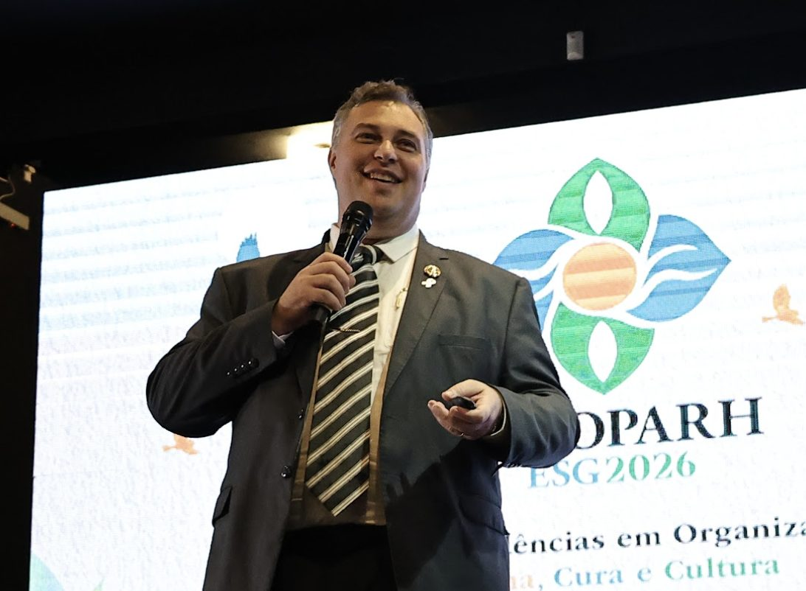

Instituto Virtudes
O Instituto Virtudes estuda o ser humano e como transformar os sistemas em que ele vive.
Da Virtologia, dedicada ao funcionamento humano, aos Sistemas Humanizados - Humanização 2.0, voltados à construção de organizações compatíveis com as pessoas. Duas frentes de conhecimento, uma direção: transformar as condições que influenciam a vida humana.
Escola clínico-filosófica
Virtologia
A maior parte do sofrimento psíquico vem de uma parte primitiva do cérebro dando as ordens. E ela tem duas bases: o orgulho e o egoísmo. A Virtologia trata saúde mental desenvolvendo virtudes que tiram o poder das duas.
Humanização 2.0
Sistemas Humanizados · Humanização 2.0
Parte do sofrimento no trabalho nasce das condições que as organizações criam. Sistemas Humanizados estuda e transforma estruturas, processos e gestão para que as organizações sejam compatíveis com as pessoas.

Virtologia
O que é a Virtologia
Quando alguém faz o que não gostaria de fazer, é porque naquela hora não estava consciente. Quem estava no comando era uma parte primitiva do cérebro. Ela existe em todo mundo e serve para uma coisa só: sobreviver.
E o ser humano sobrevive de dois jeitos. Pelo egoísmo, que coloca a própria vida acima das outras, e pelo orgulho, que busca aceitação, aprovação e importância, porque quem tem lugar no grupo é protegido. São as duas bases do primitivismo humano, e delas vem a maior parte do sofrimento psíquico.
Quando essa parte manda, a pessoa se defende. A defesa se repete, endurece e vira uma casca permanente.
Vista de fora, essa casca é o que os manuais chamam de transtorno de personalidade.
A Virtologia trata isso construindo no cérebro aquilo que tira o poder dos dois. E virtude, aqui, não é valor moral: é um grupo de ideias que, treinado com exercícios certos, constrói um caminho novo dentro do cérebro e passa a funcionar sozinho, sem esforço.
Por isso a Virtologia atua em duas frentes: a saúde mental de cada pessoa e o futuro da sociedade.
O mesmo trabalho que trata alguém torna essa pessoa menos presa ao próprio status e mais voltada ao bem comum. Um mundo com menos gente se colocando acima dos outros é um mundo com menos guerra, menos fome e menos desigualdade.
Entender mais a VirtologiaSistemas Humanizados · Humanização 2.0
O futuro é construir organizações compatíveis com o ser humano.
Parte do sofrimento no trabalho não nasce apenas das pessoas, mas também das condições que as organizações criam. E ainda tentamos adaptar indivíduos a essas condições.
Temos que parar de tentar fazer os seres humanos se adaptarem melhor às empresas.
E começar a fazer as empresas serem compatíveis com os seres humanos.
Eduardo Casarotto
Normas internacionais como a ISO 27500 e a ISO 27501 já tratam das organizações centradas no ser humano. Sistemas Humanizados - Humanização 2.0 é a proposta de Eduardo Casarotto para estudar e transformar estruturas, processos e gestão nessa direção.

Onde o trabalho acontece
O trabalho do Instituto acontece onde o sofrimento é mais concreto: unidades prisionais, comunidades terapêuticas, hospitais, escolas e organizações.
A maior parte dos projetos do Instituto é gratuita, e o método é aberto a quem quiser aplicá-lo.

Programa “O Novo Eu”
Exercícios de virtudes aplicados em grupo, sem precisar de um virtólogo conduzindo. Foi feito para a própria instituição aplicar sozinha, e é o que acontece hoje em presídios, comunidades terapêuticas e organizações que trabalham com recuperação de pessoas.

Livro “Guia das Virtudes” para escolas
Material para Educação Infantil e Anos Iniciais, com roteiro pronto para o professor e um livro que vai para casa com a criança. Trabalha autocontrole e convivência justamente na idade em que o cérebro mais muda com o que se repete.
Humanização Carcerária
A Humanização 2.0 aplicada na estrutura das unidades: regras, rotinas e formação das equipes. O trabalho alcança tanto quem cumpre pena quanto quem trabalha ali dentro.
Depoimentos
Profissionais de outras escolas
Psicólogos, psicanalistas e terapeutas formados em outras linhas estudaram a Virtologia e passaram a trabalhar com ela:
Conhecer a Formação em Virtologia“Não tem como não falar que é revolucionário. Depois que você conhece, não tem como não trabalhar com isso.” Carina · Neuropsicopedagoga, psicanalista e terapeuta ABA
“É libertador. Para consultório, foi uma revolução e tanto.” Fernanda · Psicóloga clínica (TCC)
Livros
Diversos livros publicados sobre funcionamento humano, personalidade e desenvolvimento.
Ver os livros
Base científica
Sobre o que a Virtologia afirma
A Virtologia é uma escola clínico-filosófica com base científica. Ela escreve o que afirma de um jeito que pode ser testado, dizendo o que confirmaria e o que derrubaria cada ideia, conversa com a neurociência e publica artigos científicos.
Ela passou pelas mesmas seis perguntas que um manual internacional usa para julgar as dezoito maiores teorias da personalidade, de Freud até hoje.
A Virtologia diante de outras grandes teorias
Palestras e eventos
Eduardo Casarotto conduz palestras e formações em instituições, empresas, universidades e eventos.
Conhecer palestrasReferências internacionais
Um debate que vai além do Instituto
Referências internacionais independentes sobre centralidade humana, futuro do trabalho e saúde mental nas organizações:
ISO 27500 e ISO 27501
2016 e 2019, Organização Internacional de Normalização
Princípios para organizações centradas no ser humano e orientações para que gestores os levem à estratégia e aos processos.
OIT
2019, Declaração do Centenário para o Futuro do Trabalho
Defende uma abordagem do futuro do trabalho centrada no ser humano.
OMS
2022, Diretrizes sobre saúde mental no trabalho
Recomendações que incluem intervenções na organização do trabalho, além de ações com gestores e trabalhadores.
Referências independentes, cada uma com o seu escopo. Nenhuma delas valida ou certifica os Sistemas Humanizados. Veja o que cada documento propõe.
Trazemos o Futuro